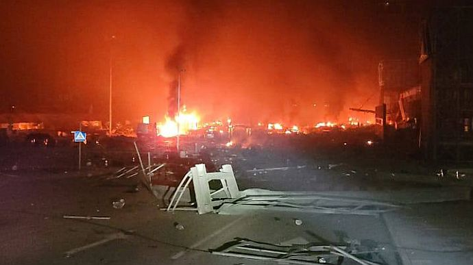
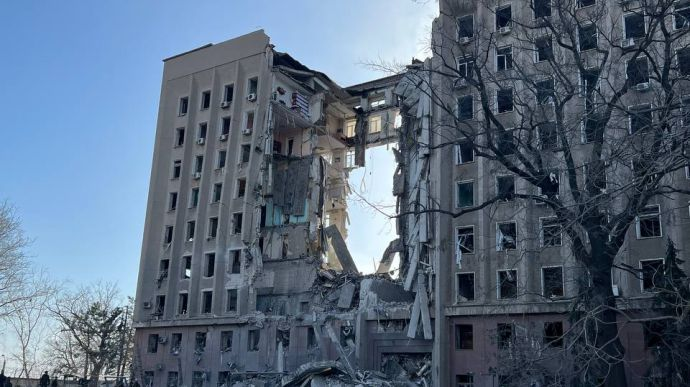
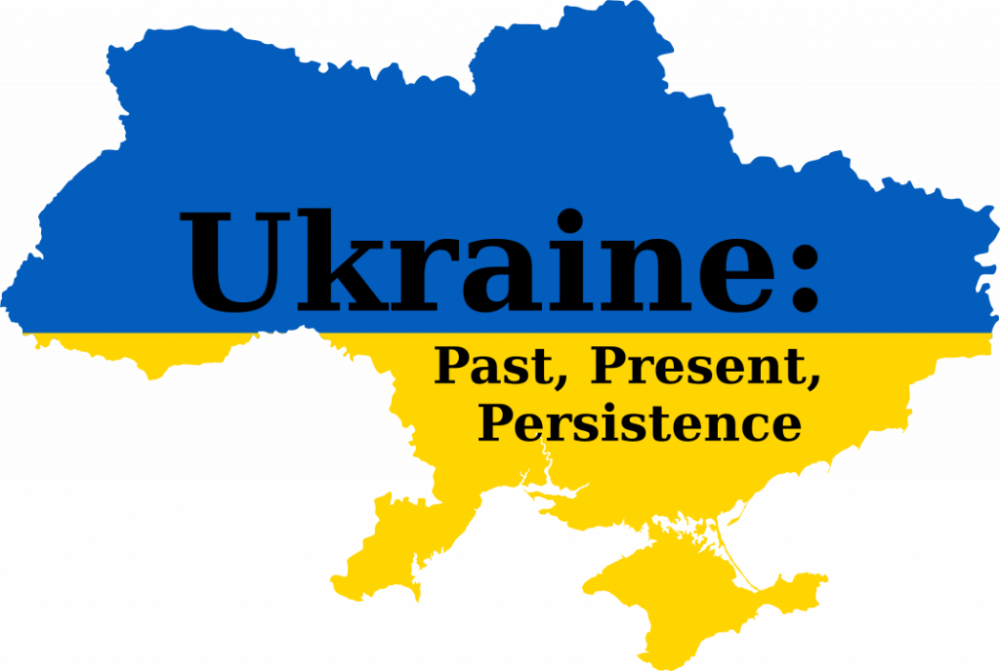

Le début de la guerre
Jeudi. 24 février 2022. Sept heures trente minutes du matin. Je fais mon maquillage et je révise la physique pour le contrôle.
L’appel de ma sœur à 7h35 a changé ma vie. Le matin du 24 février a changé la vie de 44 millions de personnes.
“Nous avons des explosions à Kyiv” - a dit ma soeur.
“Nous avons de vraies explosions, de la fumée et des sirènes partout. Maman, qu’est-ce que c’est?” - ma mère n’a pas répondu. On ne savait pas qu’est-ce que c’est.
Ma mère a dit que je devais aller au supermarché et acheter les conserves, les céréales, la nourriture pour les chiens et les médicaments.
Au lieu d’aller à l’école, j’ai fait des réserves de nourriture.
Les jours suivants passèrent dans la confusion.
Une semaine plus tard, le 3 mars, la russie occupait Kherson - une ville près de chez moi. Pour nous, cela signifiait une seule chose. Son prochain objectif - nous. Mykolaiv.
Si on regarde la carte, pour capturer l’Ukraine, il fallait passer par ma ville.
La première explosion majeure a eu lieu le 24 mars. Pour moi c’était comme ça: j’ai eu mon cours d’anglais en ligne et soudain j’ai entendu un bruit fort et devant moi, sur ma fenêtre, j’ai vu les parties de l'immeuble qui sont tombées. Ma première pensée - une bombe a frappé ma maison. La peur - c’était ma seule émotion dans cette seconde.
Avec la peur j’ai osé aller à la fenêtre et voir ce qui se passait.
Les fenêtres de ma maison se sont brisées en poudre. Seulement une heure plus tard, il est devenu clair qu’une bombe a frappé l'hôtel en face de ma maison et l’a détruit.
Premières impressions
Après cela, j’ai réalisé ce qui se passait. Mon pays est en guerre. Avant cette explosion, je ne comprenais pas ça. Il est difficile de comprendre et d’accepter un fait aussi terrible si vous ne le voyez pas de vos propres yeux. Les sirènes sonnaient plus fréquemment. Chaque heure j’entendais ce bruit terrible, qui signifiait une chose - maintenant quelque chose pouvait arriver.
Un peu plus tard, à 8h du matin, ma mère et moi, nous sommes promenés nos chiens, nous sommes rentrées chez nous et avons entendu encore une fois un rugissement terrible. La bombe est tombée sur l'administration de notre région. Les gens ont commencé à travailler le matin. Et la bombe les a touchés. 37 personnes ont été tuées.
Les gens qui voulaient juste vivre, élever leurs enfants, aller à la mer l’été, acheter un nouveau livre ou manger une pizza avec des amis le soir ont été tués le matin 29 mars par un pays agresseur.
Les effets
Pendant cette période, 90% du temps j’étais à la maison avec ma mère et nos animaux parce qu’il était dangereux de sortir. Il était très important de ne pas paniquer. Pour me distraire, j’ai regardé les séries, tricoté, dessiné. J’ai eu les cours en ligne mais c’était impossible de se concentrer sur quelque chose car chaque heure ton activité était interrompue par une sirène. Pendant l'alarme, il fallait aller au bunker. Le problème est que le bunker le plus proche était à deux routes de ma maison. Lorsqu’il y a une alarme, il est interdit de quitter la maison si loin, car une bombe peut tomber. Donc chaque fois, nous nous asseyions dans le couloir et dans la peur et les larmes, nous espérons avoir de la chance. Mon ami m’a demandé de l’aider. Nous avons commencé à cuisiner pour 30 personnes dans notre armée. Nous avons cuisiné des céréales et de la viande pour que nos défenseurs aient la force de se battre. Au même moment, la russie bombardait le système d’approvisionnement en eau de ma ville. Plus précisément, nous n’avions pas d’eau dans les robinets. C’était ma vie jusqu'au 28 mai.
Je suis entrée dans une université en France et ma mère a dit qu’on partirait car c’était devenu trop difficile et effrayant. Nous avons tout quitté - notre appartement, les chats, des poissons, des amis et des proches et nous sommes partis. La route vers Quimper a été longue et difficile. Nous y avons passé trois mois. L’été a été une période très difficile pour moi. Le stress m’a rendu anorexique. Donc en été je n’ai pas vécu mais j’ai survécu. Les feux d’artifice le 14 juillet sont devenus un cauchemar pour moi - ce son m’a rappelé les sons de la guerre.
C’est l’un des exemples du fait que la guerre a laissé une empreinte sur moi.
Après être arrivé à Lannion, la guerre et le stress n’ont pas fini pour moi. Ma famille, mes amis, ma sœur enceinte - tous sont restés en Ukraine. Chaque matin commence par des nouvelles et des appels pour s’assurer que tout le monde est en vie. Récemment, c’est devenu plus compliqué car la russie a bombardé des centrales électriques et l’électricité en Ukraine est devenue une chose rare.
Nos objectifs
Nous nous sommes réveillés le 24 février. Dans une autre vie. En étant un autre peuple. Le 24 février, des millions d'entre nous ont fait un choix. Pas un drapeau blanc, mais un drapeau bleu et jaune. Pas la fuite, mais aller de l'avant. Au devant de l'ennemi. Résister et se battre.
Les explosions du 24 février nous ont sidérés. Depuis lors, nous n'avons pas écouté tout le monde. On nous a dit : vous n'avez pas d'autre choix que de vous rendre. Nous disons : nous n'avons pas d'autre choix que de gagner.
Cette année pourrait être qualifiée comme une année de pertes pour l'Ukraine, pour toute l'Europe et pour le monde entier. Mais c'est faux. Nous n'avons rien perdu, cela nous a été enlevé. L'Ukraine n'a pas perdu ses fils et ses filles, ils ont été tués par des meurtriers. Les Ukrainiens n'ont pas perdu leurs maisons, elles ont été détruites par des terroristes. Nous n'avons pas perdu nos terres, elles ont été occupées par des envahisseurs. Le monde n'a pas perdu la paix, la Russie l'a détruite.
C'est impossible à oublier. Et il est impossible de pardonner. Mais il est possible de gagner. Nous nous sommes tenus debout parce qu'il y avait quelque chose qui nous faisait avancer. Notre état d'esprit. Nous nous battons et nous continuerons de nous battre. Pour le mot le plus important : "victoire". Elle viendra à coup sûr. Nous nous en approchons depuis 334 jours. Y a-t-il quelque chose qui peut nous effrayer ? Non. Y a-t-il quelqu'un qui peut nous arrêter ? Non. Parce que nous sommes tous ensemble. C'est pour cela que nous nous battons. L'un pour l'autre.
Quels sont mes rêves maintenant? Le retour de notre peuple. Le retour de nos terres. Le retour à la vie normale. Aux moments heureux sans couvre-feu. Aux joies ordinaires sans alertes.. Le retour de ce qui nous a été volé. L'enfance de nos enfants, la vieillesse paisible de nos aînés. Et pour que le chiffre le plus important figure dans les comptes rendus: 603 628 kilomètres carrés. La surface de l'Ukraine indépendante, telle qu'elle était depuis 1991. Telle qu'elle le sera toujours.
Je suis reconnaissant d'être ici. Je suis reconnaissant de l’aide et du soutien des profs et de mes amis ici. Vous avez changé ma vie. Vous m’avez donné ce que j’ai perdu le 24 février 2022 - le bonheur et le calme. Merci beaucoup.